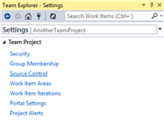
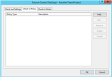
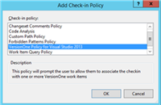
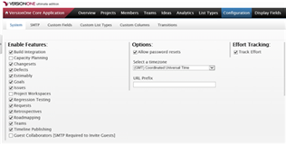
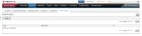
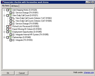

VersionOne Integration for Microsoft TFS
VersionOne's integration for Microsoft Team Foundation Server (TFS) provides visibility into source code changes while freeing the development team to focus on deliverables.
Contents
- Description
- System Requirements
- Installation and Configuration
- Using the Integration
- Troubleshooting Tips
- Technology
Description
The integration is comprised of two parts: the TFS Listener and the TFS Policy, and each must be installed and configured separately.
The TFS Listener is a web service that is responsible for responding to check-in and build events from TFS. For each qualifying check-in event the listener creates a "ChangeSet" in VersionOne, providing the team visibility into the code changes for a story or defect. This visibility can be useful when tracking down defects or performing code reviews. For each qualifying build event, the listener creates a "BuildRun" in VersionOne. If possible, BuildRuns are associated with stories and/or defects in VersionOne, providing the organization visibility into build contents. This visibility is useful when selecting a build to release, identifying problem builds, or generating release notes.
In order for the listener to create associations in VersionOne, the check-in comment must include a VersionOne story or defect ID, such as "S-01454" or "D-21054". The TFS Policy ensures that this requirement is met. When this policy is enabled for a TFS project, each comment is scanned for a VersionOne ID. If not found, the policy fails and prompts the user to select an ID from a dialog box. The user may select from items they own in active iterations, or from all items in active iterations.
The following sequence diagram shows the primary workflows of the integration:
title VersionOne Integration for TFS (V1TFS) Developer->VS: Check In Changes VS->TFS: Check In Changes TFS->V1TFS: CheckinEvent V1TFS->VersionOne: ChangeSet TFS->TFS: Build Project TFS->V1TFS: BuildCompletionEvent2 V1TFS->VersionOne: BuildRun
System Requirements
- VersionOne:
- Tested with VersionOne 14.3.5.6349. Expected to work with any version higher than 8.1.
- Compatible with all VersionOne Editions and agile methodology condigurations.
- VersionOne Authentication or Windows Integrated Authentication. (Does not work with other forms of SSO.)
- A member with Team Member project role, or higher, on integrated projects.
- Team Foundation Server:
- Microsoft Team Foundation Server 2012, 2013
- VersionOne TFS Listener:
- Tested with Windows Server 2012. Expected to work with Windows Server 2008 or higher, provided the required version of .NET Framework can be installed (see below). Windows must have the following features enabled:
- NET-WCF-HTTP-Activation45
- Tested with .NET Framework 4.5. Expected to work with any subsequent version.
- Tested with IIS 8.0. Expected to work with any version higher than 7.0. IIS must have the following features enabled:
- IIS-WebServerRole
- IIS-WebServer
- IIS-ISAPIFilter
- IIS-ISAPIExtensions
- NetFx4Extended-ASPNET45
- IIS-NetFxExtensibility45
- IIS-ASPNET45
- Tested with TFS Client DLLs provided by Team Explorer. TFS Client DLLs are not redistributable so they are not provided with the integration. Expected to work as long as any version of Visual Studio is installed. Recommendation: install on the same host as TFS so DLLs will be available.
- Bi-directional network access between VersionOne TFS Listener and TFS. This usually means TCP/IP port 9090 for the TFS Listener. Recommendation: install on the same host as TFS to avoid network issues such as firewalls.
- Bi-directional network access between VersionOne TFS Listener and VersionOne. This usually means TCP/IP port 443 for https.
- Tested with Windows Server 2012. Expected to work with Windows Server 2008 or higher, provided the required version of .NET Framework can be installed (see below). Windows must have the following features enabled:
- VersionOne TFS Policy:
- Requires .NET Framework 4.5 or higher.
- Tested with Visual Studio 2013 Professional Update 4 and VS2012 Professional Update 3. Expected to work with any update to Visual Studio 2012/2013.
Installation and Configuration
Before using the integration you will need to perform the following actions:
- Install and configure the TFS Listener.
- Install and enable the TFS Policy.
- Enable VersionOne for Build Integration.
Installing the TFS Listener
The VersionOne TFS Listener is a web service that must be installed on a machine that has access to your VersionOne server and your Team Foundation Server. It is recommended that you install the listener on the Team Foundation Server.
To install the listener, execute
the VersionOne.Integration.TFS.Listener.Installer.msi on the appropriate machine and
follow the steps in the installation wizard. You can verify the
listener by navigating to the following URL into your browser:
http://[machine]:[port]/Service.svc
Note: Replace [machine] with the name of the machine hosting the service, and [port] with the TCP port number that you provided in the installer.
For instance, if the machine hosting your TFS Server is called "TFSServer" and you specified port 9090 during the install, your
URL would be:
http://tfsserver:9090/Service.svc
If successful, you should see a page similar to the following:

Configuring the TFS Listener
In order for the TFS Listener to work it must know which VersionOne instance to use when creating assets and making associations, and which TFS instance to use for listening to events. Configuring the TFS Listener is accomplished using the TFS Listener Configuration tool. The configuration tool is a separate Windows application that is installed as part of the listener installation. If you need to reconfigure the listener at a later date, the configuration tool is available from the Windows Start menu under Program Files > VersionOne > TFS Listener > VersionOne.Integration.Tfs.Listener.Config.
The configuration tool has 3 tabs:
- VersionOne Server
This tab allows you to configure connectivity to your VersionOne instance. The values that you enter depend on the authentication method that your VersionOne instance is configured to use.
For VersionOne (Basic) authentication, enter the following values in the fields provided:
- VersionOne Server URL: The URL of your VersionOne instance including the URL scheme (protocol).
- VersionOne Username: The username of the member account that the listener will use.
- VersionOne Password: The password of the member account that the listener will use.
For Windows authentication, enter the following values in the fields provided:
- VersionOne Server URL: The URL of your VersionOne instance.
- VersionOne Username: The domain and username of the member account that the listener will use (i.e. "MyDomain\username").
- VersionOne Password: Leave this field blank.
Click the Test Connection button to ensure a successful login to VersionOne. The green box at the bottom of the dialog should display a successfully connected message.
- TFS Server
This tab allows you to subscribe to TFS Events. Complete the following:
- TFS Server URL: The URL of your TFS server.
- TFS Username: The username of your TFS server that the listener will use.
- TFS Password: The password of your TFS server that the listener will use.
Click on the Connect button to test login success for your TFS server.
If the TFS server connection is successful, click the Test Events button which will perform the following:
- Creates a test web service request to check that the listener is functioning properly and the event check-in message is correctly received and processed
- Fires a notification event through TFS and checks that the message is correctly received by the listener
- Advanced
If the event tests are successful, a message is displayed on the bottom of the tool with the result. In addition, you will be able to see the request details in the V1Debug.txt log file, which is located in the C:\ProgramData folder.
Finally, click on the Subscribe button to enable TFS Events that should connect with VersionOne. You should see the "CheckinEvent2" and the "BuildCompletionEvent" appear in the Current Subscriptions box.
This tab allows you to configure the regular expression used to match VersionOne IDs in Check-in comments and enable a debug log. This configuration is optional since we set the default value to a working expression. We do not recommend you change this unless necessary.
Installing the TFS Policy
The VersionOne Check-in Policy ensures that each TFS Check-in contains a VersionOne identifier. This policy must be installed on each machine running Visual Studio. To install the VersionOne Check-in policy, execute VersionOne.TFSPolicy.Installer.vsix on the client machine.
Enabling the TFS Policy for a Project
In order to be considered when performing a check-in, the VersionOne TFS Check-in policy must be enabled on a TFS project.
Note: The screenshots displayed below depict Visual Studio 2013. If using Visual Studio 2012 your screen may appear different, but the same actions apply.
Perform the following steps to enable the Check-in policy on a TFS Project:
- Open Visual Studio.
- Open the Team Explorer - Home.
- Click on Settings.
- Select "Source Control" from the Team Project List.
 - Select the "Check-in Policy" tab.
 - Click "Add".
- Select the "VersionOne Policy..."
 - Click Ok to close the "Add Check-in Policy" dialog.
Enabling VersionOne Build Integration
In order to access TFS Build Runs in VersionOne you must configure the VersionOne application. The following steps describe how to enable Build Integration, create a Build Project, and assign that project to a project that containts stories and defects.
- Log into the VersionOne application as administrator.
- Navigate to the Administration > Configuration > System page.
- Under "Enable Features", check the "Build Integration" checkbox and click the Apply button.
 - Navigate to the Administration > Projects > Build Projects page.
 - Click Add to add a new Build Project.
- Specify the following:
- Title: This is how the Build Project will be known to VersionOne users.
- Reference: This should be the name of the Build Definition of the TFS Team project, and it is how the Build Project will be known to TFS.
- TFS Build Definition: To find the TFS Team Project Build Definition, view Team Explorer - Home and click on Builds. In the Builds window, you should see the Build Definition of your project under the All Build Definitions section.
- Click Ok to save the new Build Project. The new Build Project should no be visible on the Administration > Projects > Build Projects page.
- Navigate to the Administration > Projects > Projects page.
- Click Edit on the row for the project you want associated with a Build Project.
- Using the "Build Projects" dropdown add the appropriate Build Project.

- Click OK to accept the changes.
- Logout of VersionOne.

{kind=link}
{kind=link}
{kind=link}
{kind=link}
{kind=link}
{kind=link}
{kind=link}
{kind=link}
{kind=link}
{kind=link}
Using the Integration
Perform the following steps to use the integration:
- Open a Visual Studio project that is in the selected TFS project.
- Open a file and make a change (e.g. add a comment).
- Save the change.
- Go to Team Explorer and select Pending Changes.
- You should be presented with the following dialog box:
- Provide the VersionOne URL and your credentials.
You may want to wait until after testing to cache credentials.
- Click OK.
You should now be presented with the following dialog, populated with information from your VersionOne Server:
 - Select an Item in VersionOne.
- Click OK.
- The VersionOne
work item Id should now appear in the Comment box in Team Explorer - Pending Changes. Check-in your change.
Once the check-in completes, launch your browser and navigate to VersionOne. Login and locate the item you chose to associate with the check-in. Click on the item to open the details page. You should now see data in the following grids: Changesets and Affected Build Runs.
{kind=link}
{kind=link}
Troubleshooting Tips
- If you cannot make a connection to the TFS server using the config tool:
- Check that you have attached a TFS collection to the TFS server. If you do not wish to attach a collection, you will need to use the collection name in the URL for TFS in the config tool.
- If using Windows Integrated Authentication for TFS, be sure to provide the domain name in the username field in the config tool
- Double check that you have the correct URL and credentials by trying it in a browser window
- Only use "localhost" as the TFS server name when the config tool is running on the same server
- If you do not see any ChangeSet or Build relationships
in VersionOne:
- Verify that Changesets and Build Integration are both enabled in VersionOne.
- Ensure you selected the same VersionOne Story or Defect in Visual Studio and VersionOne.
- Use the TFS Listener Configuration tool and verify that you are subscribed to TFS Events.
- Ensure that the following VersionOne URLs point to the same instance:
- The TFS Listener URL (using the Listener Configuration utility).
- The URL used in Visual Studio.
- The Browser URL.
- Navigate to the TFS Listener URL, specified in the Listener Configuration Utility, and make sure the WebService is running.
- Check the application event log on the TFS Listener machine for any TFS errors (Located: C:\Program Files (x86)\VersionOne\TFSListener\web\App_Data\ElmahErrorLogs).
- If you do not see Build relationships, check the following:
- Verify that Build Integration is enabled and configured properly in VersionOne.
- Verify that a build executed when the check-in was performed. If not, or if you only build daily, you will need to force a build.
- Check the application event log on the TFS Listener machine for any TFS errors (Located: C:\Program Files (x86)\VersionOne\TFSListener\web\App_Data\ElmahErrorLogs).
Technology
- The VersionOne Integration for TFS was developed in C# using Visual Studio 2013.
- The TFS Listener Installer was developed using WIX.
- Source code is available in a GitHub repo.
- Previous releases of this integration are available in the VersionOne Application Catalog.